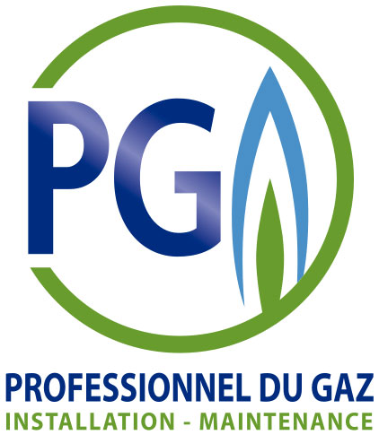
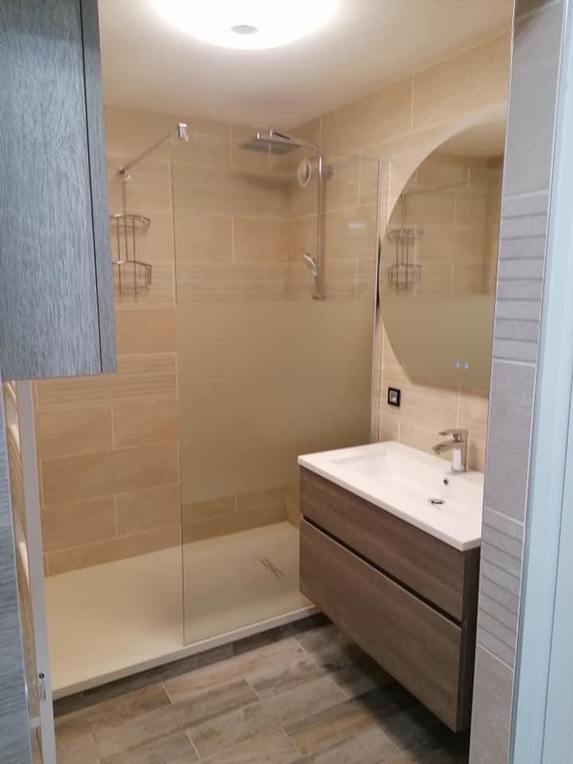
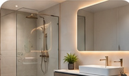

Artisan plombier-chauffagiste à Carency
Julien Willebrouck intervient en plomberie, chauffage et salle de bains dans les secteurs de Lens, Liévin, Arras et Béthune.



Professionnel du GazUn artisan local,
à votre écoute
Je suis Julien Willebrouck, artisan plombier-chauffagiste à Carency. J’interviens sur vos installations de plomberie, de chauffage et de salle de bains, de la pose des équipements à leur entretien.
Un seul interlocuteur pour votre chantier
Mon entreprise est installée à Carency. Vous pouvez me solliciter pour poser des équipements, entretenir votre chauffage, réparer une installation sanitaire ou transformer votre salle de bains.

Des solutions complètes
pour votre habitat
Chauffage, plomberie, traitement de l’eau et salle de bains, de l’installation à la rénovation.

Plomberie sanitaire
Installation, dépannage et rénovation de vos équipements sanitaires.

Installation chauffage
Pose, entretien et remplacement de vos équipements de chauffage.

Traitement de l’eau
Des équipements pour limiter le calcaire dans votre installation.

Création de salle de bains
Conception, création et rénovation de votre salle de bains.